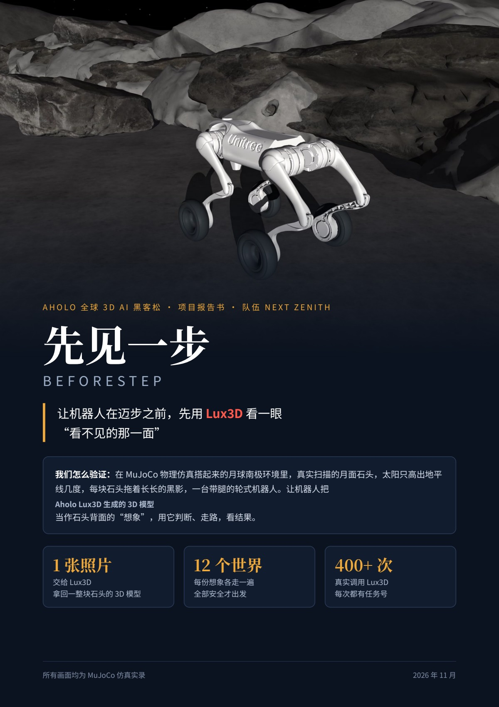
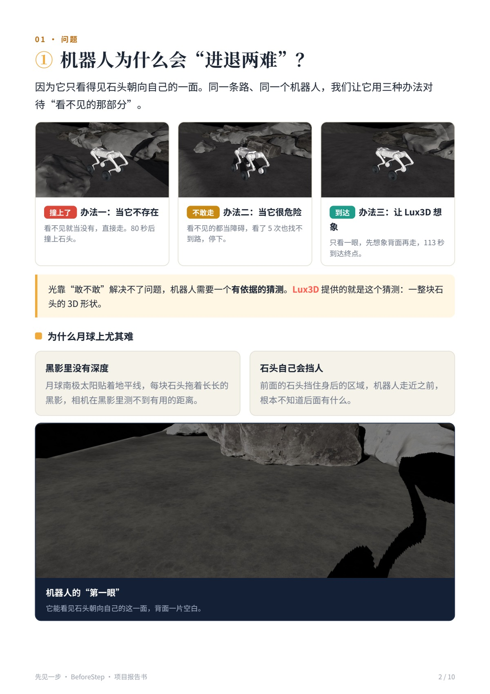
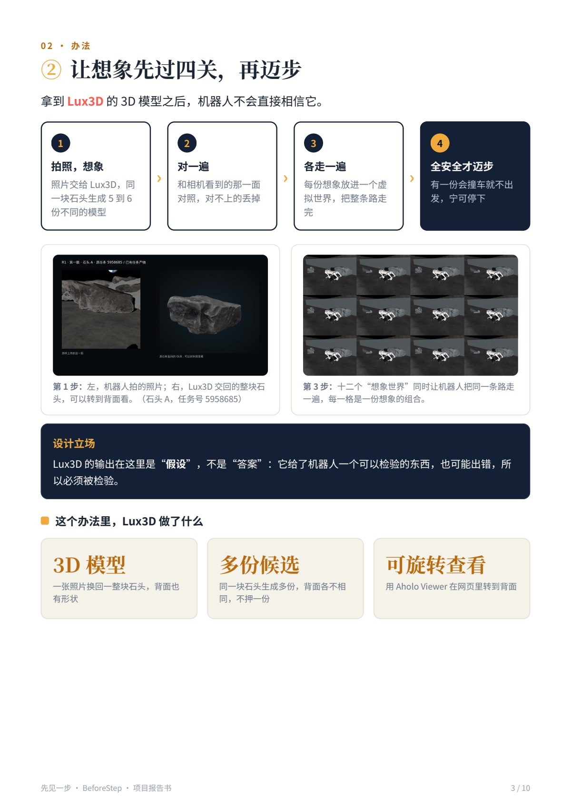
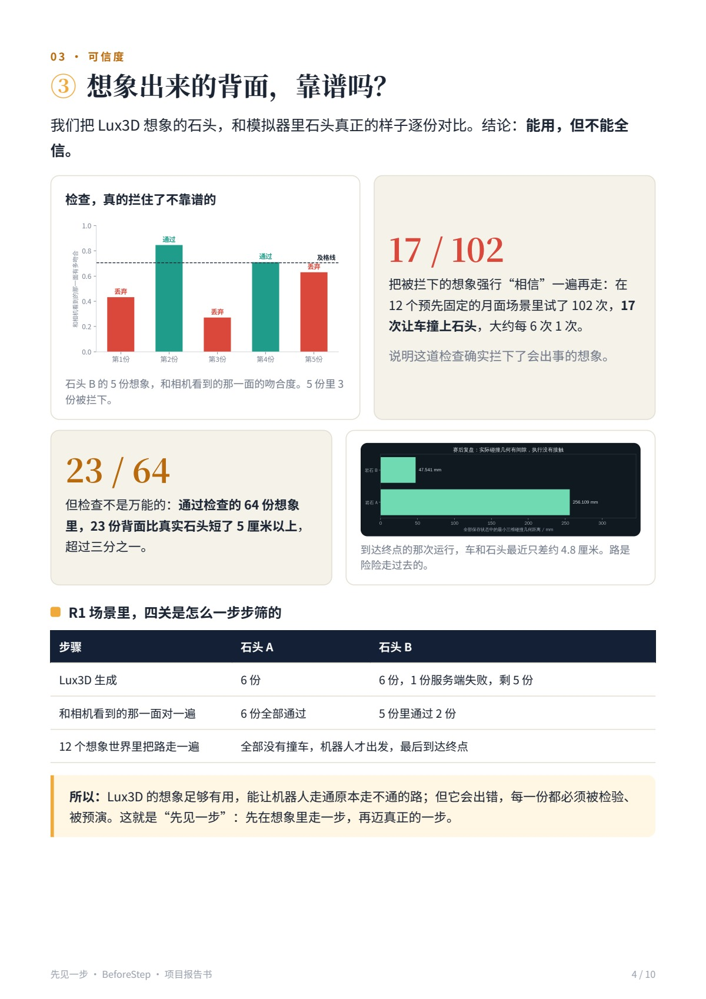
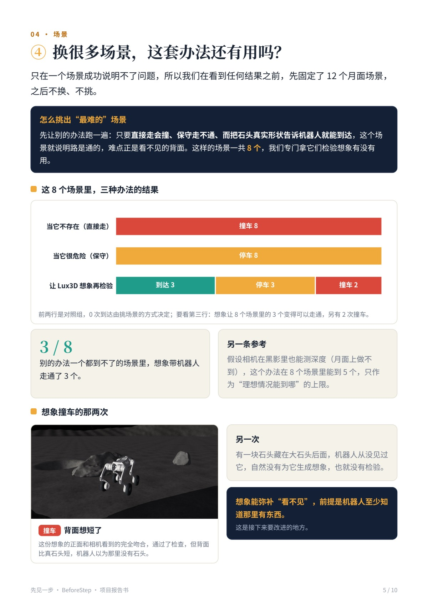
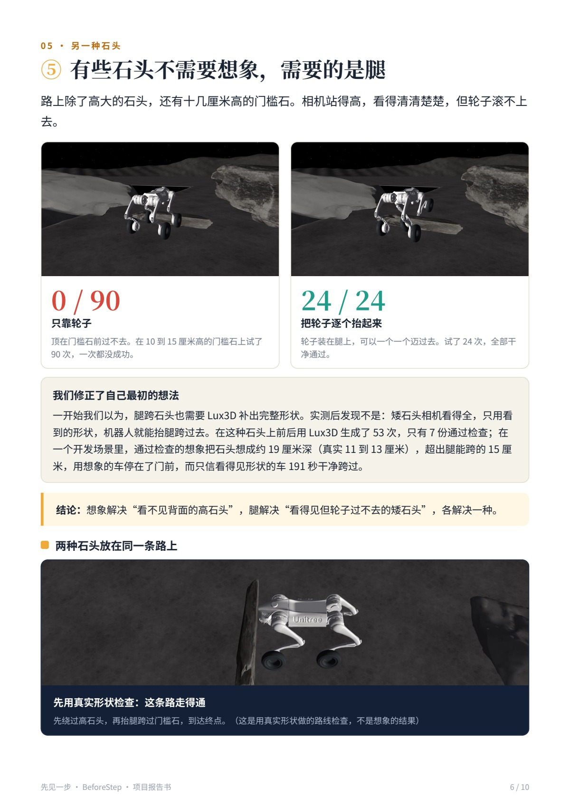
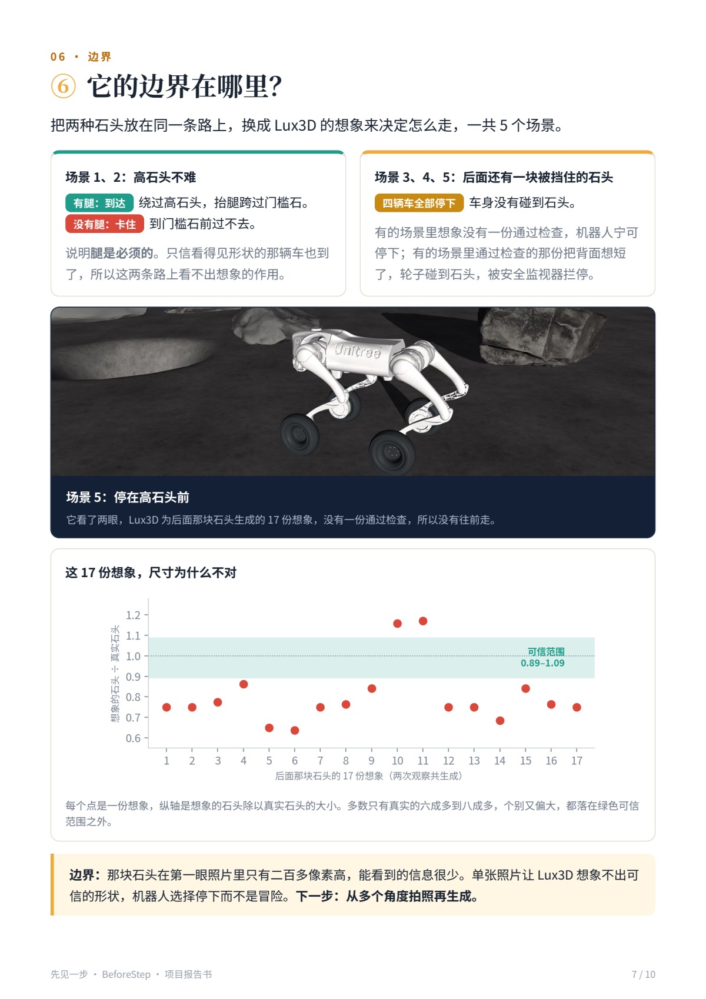
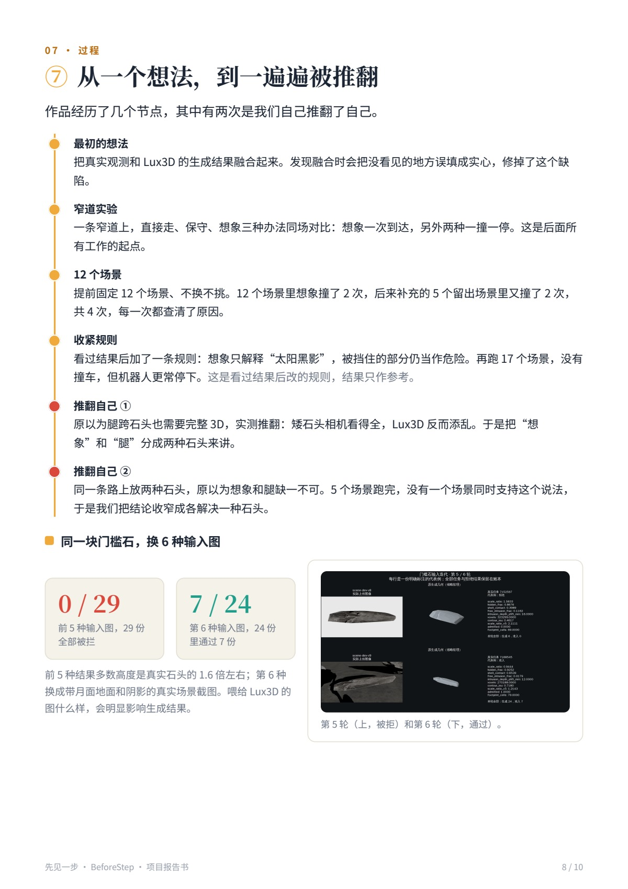
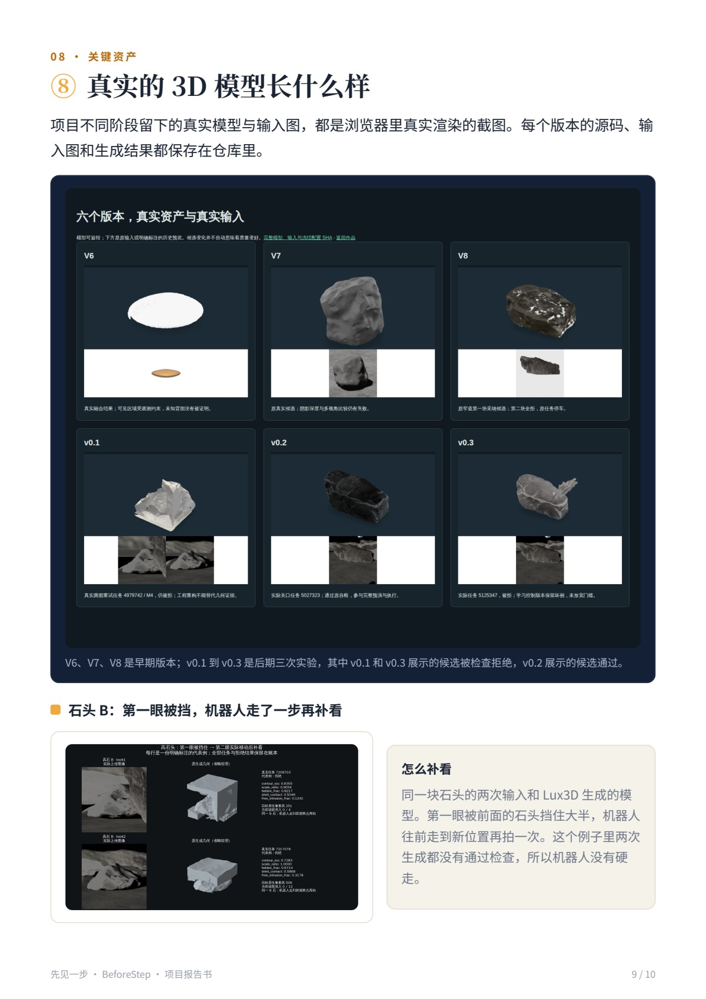
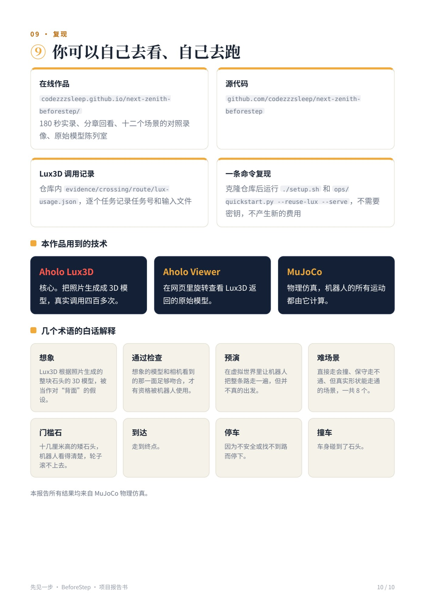

NEXT ZENITH · AHOLO 全球 3D AI 黑客松
先见一步 · 项目报告书 v3
正式报告共 10 页，包含问题、方法、实验结果、失败边界与关键资产迭代。所有机器人运动画面均来自 MuJoCo 仿真实录。
源代码、原始数据与复现
作品实际调用 Lux3D 四百多次，生成的三维模型参与观测核对、路线预演和机器人行动判断。下方可查看原始模型、制作代码与数据。
最新事实与原始来源 · 成片、39 条素材与数据包 · 数据恢复与制作代码
报告第 10 页的冻结 R1 复现入口完整写法如下。使用 Python 3.12，并先取得 Git LFS 数据；这一路径复用已有 Lux3D 结果，不需要密钥，不创建新的生成任务。
git clone https://github.com/codezzzsleep/next-zenith-beforestep.git
cd next-zenith-beforestep
git lfs pull
./setup.sh
MUJOCO_GL=egl .venv/bin/python ops/quickstart.py --reuse-lux --serve此命令运行冻结 R1 场景。其他场景的配置、原始输入与执行记录见仓库文档。










历史版本与技术细节继续保留：上一版 23 页 PDF · 上一版完整技术报告 · 上一版排版源稿。